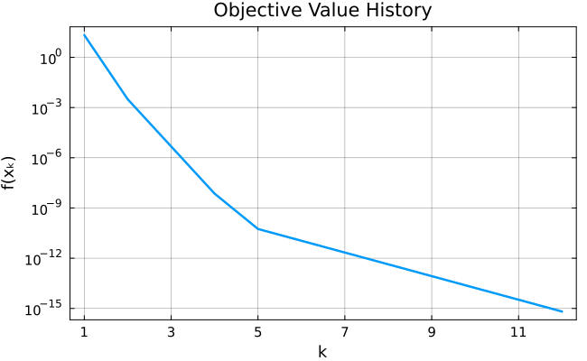

Callbacks
Penelopt.jl lets you hook into the solve process at each iteration through a callback function. This is useful to log custom information, record history, plot progress in real time, or implement your own stopping criterion.
The signature of the callback function is
callback(nlp, solver, stats)and its return value is ignored. The call to the callback function is the last step of each iteration. Therefore, you can customize the behavior of the algorithm by implementing your customization into the callback. Below are a few typical examples of callback customizations.
Example 1 : Plot the Objective Value History
using CUTEst, Penelopt, Plots
# Define the nonlinear program
nlp = CUTEstModel("HS26")
# Define the callback: you can use variables defined in the current scope
objvals = Float64[]
function my_callback(nlp, solver, stats)
push!(objvals, stats.objective)
end
# Solve the problem
stats = L2Penalty(nlp, callback = my_callback)
# Plot the objective values
plot(objvals; plot_kwargs...)
Note that the callback acts at the end of each outer loop iteration. Refer to the terminology section for details on what this means.
Example 2 : Stop the Algorithm Early
Setting
stats.status = :userinside the callback will cause the algorithm to stop immediately after the callback returns. Use this to implement custom stopping criteria (e.g., a target objective value, a wall-clock budget managed externally, or an interactive "stop" signal).
using CUTEst, Penelopt
# Define the nonlinear program
nlp = CUTEstModel("HS26")
# Define the callback
# We stop when the objective function is below 1e-3.
function stop_early(nlp, solver, stats)
if stats.objective < 1e-3
println("returning on user request...")
stats.status = :user
end
end
# Solve the problem
stats = L2Penalty(nlp, callback = stop_early, print_level = 1)┌ Info:
│ This is Penelopt.jl v0.1.0.
│ Running with linear solver LDLFactorizations.jl v0.10.2.
│
│ Problem name: HS26
│ All variables: ████████████████████ 3 All constraints: ████████████████████ 1
│ free: ████████████████████ 3 free: ⋅⋅⋅⋅⋅⋅⋅⋅⋅⋅⋅⋅⋅⋅⋅⋅⋅⋅⋅⋅ 0
│ lower: ⋅⋅⋅⋅⋅⋅⋅⋅⋅⋅⋅⋅⋅⋅⋅⋅⋅⋅⋅⋅ 0 lower: ⋅⋅⋅⋅⋅⋅⋅⋅⋅⋅⋅⋅⋅⋅⋅⋅⋅⋅⋅⋅ 0
│ upper: ⋅⋅⋅⋅⋅⋅⋅⋅⋅⋅⋅⋅⋅⋅⋅⋅⋅⋅⋅⋅ 0 upper: ⋅⋅⋅⋅⋅⋅⋅⋅⋅⋅⋅⋅⋅⋅⋅⋅⋅⋅⋅⋅ 0
│ low/upp: ⋅⋅⋅⋅⋅⋅⋅⋅⋅⋅⋅⋅⋅⋅⋅⋅⋅⋅⋅⋅ 0 low/upp: ⋅⋅⋅⋅⋅⋅⋅⋅⋅⋅⋅⋅⋅⋅⋅⋅⋅⋅⋅⋅ 0
│ fixed: ⋅⋅⋅⋅⋅⋅⋅⋅⋅⋅⋅⋅⋅⋅⋅⋅⋅⋅⋅⋅ 0 fixed: ████████████████████ 1
│ infeas: ⋅⋅⋅⋅⋅⋅⋅⋅⋅⋅⋅⋅⋅⋅⋅⋅⋅⋅⋅⋅ 0 infeas: ⋅⋅⋅⋅⋅⋅⋅⋅⋅⋅⋅⋅⋅⋅⋅⋅⋅⋅⋅⋅ 0
│ nnzh: ( 16.67% sparsity) 5 linear: ⋅⋅⋅⋅⋅⋅⋅⋅⋅⋅⋅⋅⋅⋅⋅⋅⋅⋅⋅⋅ 0
│ nonlinear: ████████████████████ 1
│ nnzj: ( 0.00% sparsity) 3
│ lin_nnzj: (------% sparsity)
│ nln_nnzj: ( 0.00% sparsity) 3
│
└
[ Info: ------------------------------------------------------------------------------------------------------
[ Info: Iter sIter Objective pfeas dfeas τ ptol dtol ‖x‖
[ Info: ------------------------------------------------------------------------------------------------------
[ Info: 0 0 +2.1160000e+01 1.05e+01 0.00e+00 1.00e+00 1.00e+00 1.05e-01 3.84e+00
[ Info: 1 6 +3.1193517e-03 2.87e-02 5.29e-02 1.00e+00 2.87e-04 5.29e-04 1.66e+00
[ Info: 2 4 +4.7482205e-06 1.22e-03 4.07e-04 1.10e+01 2.87e-04 1.71e-07 1.72e+00
returning on user request...
┌ Info:
│ Number of Iterations: 2
│
│
│ Objective...........: +4.748220504015724e-06
│ Primal Feasibility..: 1.219912480607377e-03
│ Dual Feasibility....: 4.068723300887467e-04
│
│
└ EXIT: user.What Can You Access
All the information relevant to the current state of the algorithm is available through nlp, solver, and stats.
In particular:
nlp: theAbstractNLPModelobject that contains information relative to the nonlinear program solved byPenelopt.jl. You can for example access the problem meta or the problem counters in the callback.solver: thePeneloptSolverstructure containing all allocated objects used during the optimization process. Refer to the performance section of the documentation for a list of information that you can access through this structure.stats: theGenericExecutionStatsobject that will eventually be returned byL2Penalty. You can refer to this section for a list of the information contained in this object.